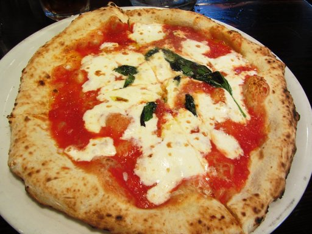

Food recognition
Name that dish.
Pick a food photo to see its five closest matches across 101 dishes. Everything runs on your device.

Sample photoMargherita pizza
Try a sample
Dish analysis
Choose your photo
Use a sample or add a photo of your own.
Top matches
Your photos stay in this browser.